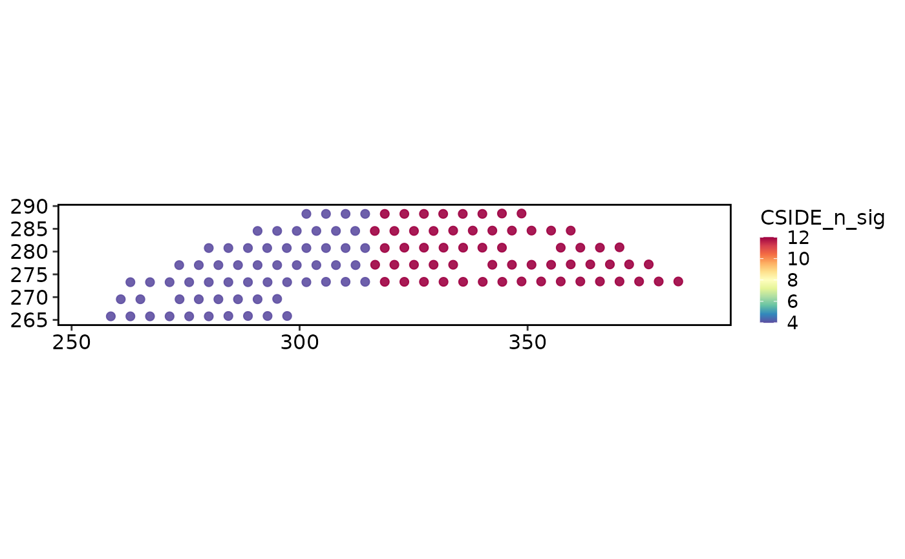
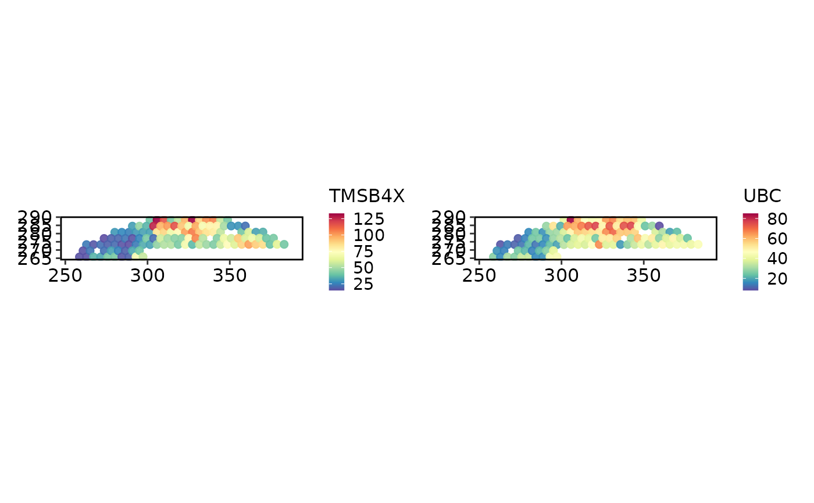

Run spacexr C-SIDE after RCTD to test cell type-specific spatial or
condition-aware differential expression.
Usage
RunCSIDE(
srt,
rctd_result = NULL,
explanatory.variable = NULL,
group.by = NULL,
condition.by = NULL,
design = NULL,
region_list = NULL,
barcodes = NULL,
mode = c("auto", "single", "regions", "general", "intercept"),
assay = NULL,
layer = "counts",
celltypes = NULL,
features = NULL,
prefix = "CSIDE",
tool_name = "CSIDE",
store_results = TRUE,
verbose = TRUE,
...
)Arguments
- srt
Spatial
Seuratobject used as the RCTD query.- rctd_result
Optional old-api
spacexrRCTD object. IfNULL,srt@tools[["RCTD"]]$objectfromRunRCTD()is used.- explanatory.variable
Named numeric vector used by
spacexr::run.CSIDE.single(). Names must match spatial spot names.- group.by
Metadata column used to build C-SIDE regions when
region_listis not supplied.- condition.by
Binary metadata column converted to a 0/1 explanatory variable for
spacexr::run.CSIDE.single().- design
Numeric design matrix used by
spacexr::run.CSIDE(). Row names must matchbarcodesor spatial spot names.- region_list
Named list of barcode vectors used by
spacexr::run.CSIDE.regions().- barcodes
Barcodes used by
spacexr::run.CSIDE()orspacexr::run.CSIDE.intercept(). IfNULL, row names ofdesignor all spatial spots are used where applicable.- mode
C-SIDE mode.
"auto"dispatches to"general","regions","single", or"intercept"based on the supplied design inputs.- assay
Assay used in
srt. IfNULL, the default assay is used.- layer
Assay layer used as the spatial expression source.
- celltypes
Optional cell types passed to C-SIDE as
cell_types.- features
Optional features retained in the normalized result table. C-SIDE itself still applies its own gene filtering through backend parameters such as
gene_threshold.- prefix
Prefix for metadata columns.
- tool_name
Name used to store detailed C-SIDE results in
srt@tools.- store_results
Whether to store detailed RCTD results in
srt@tools.- verbose
Whether to print the message. Default is
TRUE.- ...
Additional named parameters passed to the selected C-SIDE backend, such as
cell_type_threshold,gene_threshold,doublet_mode,cell_type_specific, orparams_to_test. When using the stored result fromRunRCTD()withrctd_mode = "full",doublet_modedefaults toFALSEunless explicitly supplied.
Value
A Seurat object with C-SIDE summary metadata and detailed results
stored in srt@tools[[tool_name]] when store_results = TRUE.
Examples
data(visium_human_pancreas_sub)
spatial <- subset(
visium_human_pancreas_sub,
cells = colnames(visium_human_pancreas_sub)[1:120],
features = rownames(visium_human_pancreas_sub)[1:400]
)
#> Warning: Not validating Centroids objects
#> Warning: Not validating Centroids objects
#> Warning: Not validating FOV objects
#> Warning: Not validating FOV objects
#> Warning: Not validating FOV objects
#> Warning: Not validating FOV objects
#> Warning: Not validating FOV objects
#> Warning: Not validating FOV objects
#> Warning: Not validating Seurat objects
spatial$region <- ifelse(spatial$x > stats::median(spatial$x), "right", "left")
spatial$CSIDE_n_sig <- ifelse(spatial$region == "right", 12, 4)
spatial$CSIDE_mode <- "regions"
cside_result <- data.frame(
feature = rownames(spatial)[1:4],
celltype = rep(c("Ductal", "Endocrine"), each = 2),
parameter = "right_vs_left",
logFC = c(1.2, 0.8, -0.9, -1.1),
statistic = c(4.1, 3.5, -3.2, -3.8),
p_value = c(0.001, 0.004, 0.006, 0.002),
q_value = c(0.004, 0.008, 0.010, 0.006),
significant = TRUE,
method = "regions"
)
spatial@tools$CSIDE <- list(
result_table = cside_result,
parameters = list(mode = "regions", group.by = "region")
)
SpatialSpotPlot(
spatial,
group.by = "CSIDE_n_sig",
overlay_image = FALSE,
coord.cols = c("x", "y")
)

SpatialSpotPlot(
spatial,
features = cside_result$feature[1:2],
assay = "Spatial",
layer = "counts",
overlay_image = FALSE,
coord.cols = c("x", "y")
)

if (
requireNamespace("spacexr", quietly = TRUE) &&
!is.null(spatial@tools$RCTD) &&
inherits(spatial@tools$RCTD$object, "RCTD") &&
identical(Sys.getenv("SCOP_RUN_SPATIAL_BACKEND_EXAMPLES"), "true")
) {
spatial <- RunCSIDE(
spatial,
group.by = "region",
celltypes = c("Ductal", "Endocrine"),
gene_threshold = 0.00005,
cell_type_threshold = 125
)
}